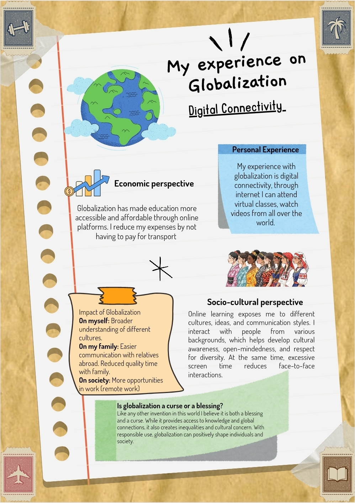
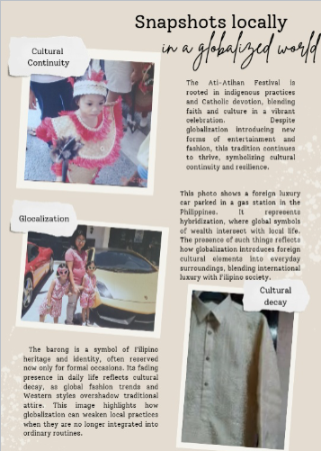
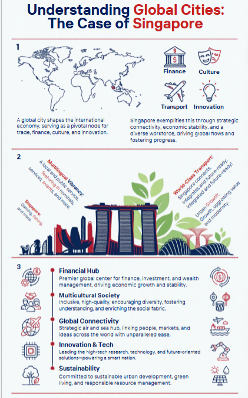
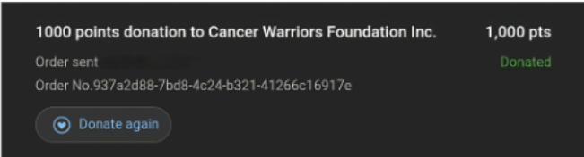

Angelenean Journey
Towards Responsible
Global Citizenship
A Comprehensive Portfolio of Global Awareness, Social Responsibility & Ethical Stewardship
Page 2
Table of
Contents
Page 3
Introduction &
My Global
Citizen Profile
Welcome to my portfolio — a living record of my journey toward becoming a more informed, empathetic, and responsible global citizen. Within these pages, you will find a curated collection of activities that shaped my understanding of the world and my role within it.
This portfolio is organized into three thematic areas: Global Awareness & Cultural Exploration, Social Responsibility Initiatives, and Ethical Consumption & Environmental Stewardship. Each section reflects real experiences and personal growth.
Experience on Globalization
Description
Globalization was able to link people through online platforms. It involved accessing virtual spaces, sharing information instantly, and engaging with others through digital tool that support education, advocacy, and collaboration.
Result / Impact on Self
Globalization is both empowering and challenging as it highlights digital connectivity that makes education and communication easier, it also warns about reduced family time, and cultural dilution.
📎 Evidence & Proof

Snapshots Locally
Description
M4 Assessment
Result / Impact on Self
This shows that globalization is layered not a progress or loss but a mix of preservation, adaptation, and erosion. It is a reminder that culture is constantly negotiating between local and global trends.
📎 Evidence & Proof

My Global City Experience
Description
Understanding Global Cities: The Case of Singapore
Result / Impact on Self
This showed that when a country puts its citizens first, everything else follows. Great infrastructure, integrated transportations,etc.
📎 Evidence & Proof

Trade Green Live Green
Description
M2 Assessment
Result / Impact on Self
A stronger sense of responsibility, trade is not just about goods moving, it is also about the planet's health. It pushes me to think about supporting sustainable practices and being mindful of consumption choices.

Donation for Cancer Patients
Description
I choose to donate to cancer patients because I believe every act of kindness no matter if it is small or substantial, brings strength and hope to those fighting their toughest battles.
Result / Impact on Self
My donation to cancer patients through rewards points shows that my choices ripple outward, that shape lives and inspire others. It is not about the financial support but about embodying kindness and responsibility in a world that needs it.
📎 Evidence & Proof

[Activity Title Here]
Description
[Write a detailed description of this activity.]
Result / Impact on Self
[Describe how this activity impacted you personally.]
📎 Evidence & Proof
Hyperlink: [Insert link if applicable]
[Activity Title Here]
Description
[Write a detailed description of this activity.]
Result / Impact on Self
[Describe how this activity impacted you personally.]
📎 Evidence & Proof
Hyperlink: [Insert link if applicable]
Last Page
Conclusion &
Reflection
Global Awareness
Understanding the interconnectedness of our world and our place in it.
Social Responsibility
Taking action to uplift communities and contribute to society's well-being.
Environmental Ethics
Making conscious choices that protect and sustain our natural environment.
[Write your concluding essay here — an overall assessment of your experience with all activities, how they collectively shaped your identity as a global citizen, and your reflection on the journey.]
[Continue your reflection — discuss what you found most meaningful, what surprised you, what challenged you, and what you would do differently.]
[Close with your future plans — what advocacies will you continue or begin? How do you plan to live as a responsible global citizen moving forward? Be specific and personal.]